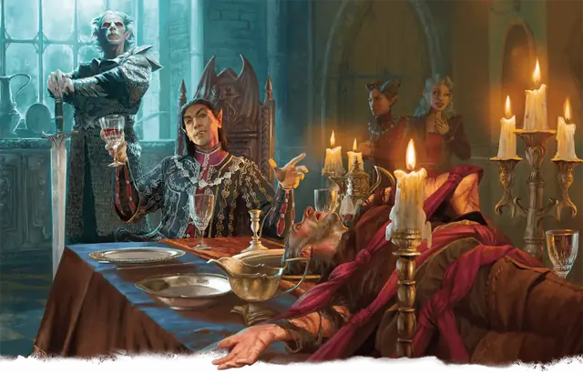

Вампир-инферналист
Vampire Infernalist
Средняя или Маленькая Нежить (Волшебник), Принципиальная Злая

Класс Защиты 16 Инициатива +13 (23)
Хиты 172 (23к8 + 69)
Скорость 40 футов, Полёта 40 футов (парит)
| мод | спас | ||
|---|---|---|---|
| СИЛ | 19 | +4 | +4 |
| ЛОВ | 16 | +3 | +3 |
| ТЕЛ | 17 | +3 | +8 |
| мод | спас | ||
|---|---|---|---|
| ИНТ | 20 | +5 | +10 |
| МДР | 16 | +3 | +3 |
| ХАР | 18 | +4 | +4 |
Сопротивление урону Некротический, Огонь, Яд
Иммунитеты Отравленный
Чувства Тёмное зрение 120 футов (без помех в магической Тьме), пассивное Восприятие 18
Языки Общий, Инфернальный
Опасность 14 (11 500 опыта; БВ +5)
Особенности
Легендарное сопротивление (3/день, или 4/день в Логове). Если вампир проваливает спасбросок, он может вместо этого сделать его успешным.
Туманный побег. Если Хиты вампира опускаются до 0 за пределами места отдыха, он использует Перевоплощение, чтобы превратиться в туман (действий не требуется). Если он не может использовать Перевоплощение, он уничтожается.
Пока у вампира в форме тумана 0 Хитов, он не может вернуться в форму вампира и обязан добраться до места отдыха в течение 2 часов, иначе будет уничтожен. Достигнув места отдыха, он снова принимает форму вампира и получает состояние Парализованный до тех пор, пока не восстановит хотя бы 1 Хит. Проведя там 1 час, он восстанавливает 1 Хит.
Слабости вампира. Вампир обладает следующими слабостями:
Запрет. Вампир не может войти в жилище без приглашения одного из обитателей.
Текущая вода. Вампир получает 20 урона Кислотой, если заканчивает свой ход в текущей воде.
Кол в сердце. Если оружие, наносящее Колющий урон, вонзить в сердце вампира, пока он находится в своём месте отдыха и имеет состояние Недееспособный, он становится Парализован до тех пор, пока оружие не будет вынуто.
Солнечный свет. Вампир получает 20 урона Излучением, если начинает свой ход на солнечном свету. Пока вампир на солнечном свету, он получает Помеху к броскам атаки и проверкам характеристик.
Действия
Мультиатака. Вампир совершает две атаки Адскими когтями и использует Укус.
Адские когти (только в форме вампира). Бросок рукопашной атаки: +9, досягаемость 5 фт. Попадание: 13 (2к8 + 4) Рубящего урона плюс 10 (3к6) урона Огнём. Если цель — существо Среднего размера или меньше, она становится Схвачена (Сл освобождения от захвата 17) одной из двух рук.
Укус (только в форме вампира или беса). Спасбросок Телосложения: Сл 18, одно согласное или Схваченное или Недееспособное или Опутанное существо в пределах 5 футов. Провал: 6 (1к4 + 4) Колющего урона плюс 16 (3к10) Некротического урона, и существо теряет ячейку заклинаний самого высокого уровня из всех ему доступных. Максимум Хитов цели снижается на число, равное полученному Некротическому урону, а вампир восстанавливает такое же количество Хитов.
Если Гуманоид, Хиты которого уменьшены этим уроном до 0, будет похоронен, то на следующем закате он восстанет в качестве Порождения вампира, находящегося под контролем этого вампира.
Сотворение заклинаний. Вампир-инферналист сотворяет одно из следующих заклинаний (заклинательная характеристика — Интеллект, Сл спасброска заклинаний 18):
Неограниченно: Волшебная рука, Обнаружение магии, Обнаружение мыслей, Огненный шар, версия 4-го уровня, Рассеивание магии, Фокусы
2/день: Наблюдение
1/день: Огненная стена
Бонусные действия
Перевоплощение. Если вампир не находится под солнечным светом или в текущей воде, он либо перевоплощается в беса Крошечного размера (Скорость 20 футов, Полёта 40 футов) или облако тумана Среднего размера (Скорость 5 футов, Полёта 20 футов (парит)), либо возвращается в форму вампира. Всё, что он носит, превращается вместе с ним.
Находясь в форме беса, статистика вампира, кроме размера и Скорости, не меняется.
Находясь в форме тумана, вампир не может совершать действия, говорить и манипулировать объектами. Он ничего не весит и может входить в пространство враждебных существ и останавливаться там. Если через некое пространство может проходить воздух, то это же может сделать и туман, хотя он и не может пройти сквозь воду. Туман обладает Сопротивлением всему урону, за исключением урона, который он получает от солнечного света.
Легендарные действия
У этого существа есть 3 использования Легендарных действий (или 4 использования в его Логове); оно может немедленно после окончания хода другого существа потратить одно использование, чтобы совершить одно из следующих действий. Существо восполняет все потраченные использования в начале каждого своего хода.
Адский удар. Вампир перемещается на расстояние вплоть до половины своей Скорости и совершает одну атаку Адскими когтями.
Инфернальное величие. Спасбросок Харизмы: Сл 17, каждое существо в 20-футовой Эманации, исходящей от вампира. Провал: 9 (2к8) Психического урона, и цель Испугана до начала своего следующего хода. Успех: Только половина урона. Провал или успех: Вампир не может совершить это действие снова до начала своего следующего хода.
Телепортация. Вампир телепортируется в видимое им в пределах 30 футов незанятое пространство.
Бонус мастерства +5
Среда обитания Город, Подземье, Девять преисподних
Сокровища Магические
Вампир-инферналист
Вампир-маг, связанный с Девятью Преисподними
Если смертные волшебники обычно колеблются, прежде чем продать душу дьяволам в обмен на магическую силу, то вампиры-маги часто полагают, что их бессмертие убережёт их от любых адских притязаний. Архидьявол Мефистофель с радостью пользуется подобной самонадеянностью, доказывая, что даже нежить не защищена от законов Девяти Преисподних.
Величайшие из преданных Аду вампиров — мастера адского пламени, называемые инферналистами, — охотятся на других магов. Обычно они слишком высокомерны, чтобы объединяться; даже в большом городе вряд ли найдётся больше одного такого существа. Днём вампиры-инферналисты бездействуют, укрываясь в убежищах, спрятанных от палящих лучей солнца, а с наступлением ночи выходят вершить свои тёмные дела.
Логова вампиров-инферналистов
Вампиры-инферналисты таятся в мрачных библиотеках и ритуальных залах вдали от солнечного света.
Местность, в которой находится логово вампира, изменяется из-за его присутствия, что создаёт следующие эффекты:
• Дьявольские звери. Вампир подчиняет себе животных в пределах своих владений. От заката до рассвета все Животные Среднего размера или меньше в пределах 1 мили от логова Очарованы.
• Истощённая эссенция. Цепкие тени в пределах 1 мили от логова ослабляют тело и ум. Любое существо, кроме вампира и его союзников, которое завершает Короткий или Долгий отдых в пределах 1 мили от логова, должно совершить спасбросок Мудрости Сл 15; при провале оно не получает преимуществ от этого отдыха.
• Неувядающие знания. Пламя в пределах 1 мили от логова не повреждает текстовые материалы.
Если вампир погибает или перемещает своё логово в другое место, все эти эффекты мгновенно исчезают.